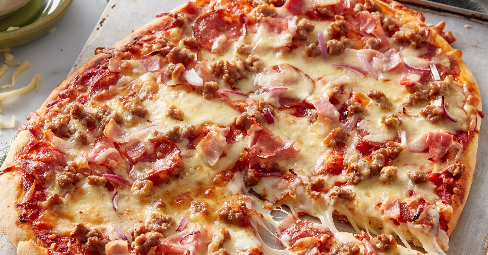
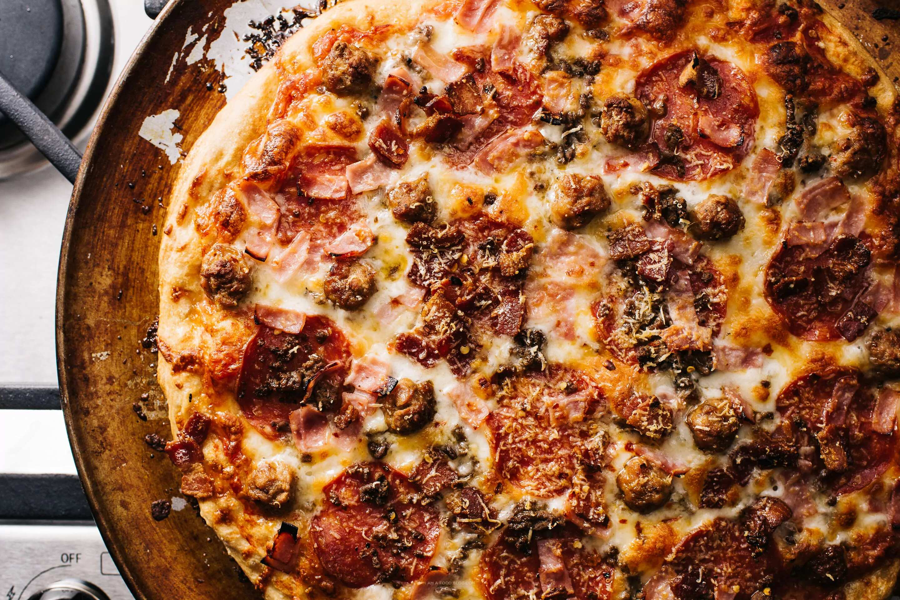

About the pizza
History
Meat pizza became popular when Italian immigrants brought pizza to the U.S. in the late 19th and early 20th centuries. While traditional Italian pizza used little to no meat, American pizzerias began adding toppings like pepperoni, sausage, and ham due to the availability of affordable meats. By the mid-20th century, meat-heavy pizzas like "Meat Lovers" became widespread with the rise of pizza chains. Today, meat pizza is enjoyed globally with a variety of toppings depending on the region, such as pepperoni in the U.S. or prosciutto in Italy.

Overal description
Meat pizza features a savory crust topped with a rich tomato sauce, melted cheese, and a variety of meats. Common toppings include pepperoni, sausage, bacon, and ham, though regional variations can include other meats like chicken or lamb. It’s known for its hearty, indulgent flavor and is often a favorite for those who enjoy a robust, protein-packed pizza experience.

Ingredients
Pizza dough
- 2 ½ cups all-purpose flour
- 1 tsp sugar
- 1 tsp salt
- 1 tbsp olive oil
- 1 tsp instant yeast
- 1 cup warm water
Pizza sauce
- 1 cup canned tomato sauce
- 1 tsp olive oil
- 1 clove garlic (minced)
- 1 tsp dried oregano
- Salt and pepper to taste
Toppings
- 2 cups shredded mozzarella cheese
- 1 cup pepperoni slices
- ½ cup cooked sausage (crumbled)
- ¼ cup cooked bacon (crumbled)
- ¼ cup cooked ham (diced)
- Olive oil (for brushing the crust)
Instructions
Prepare the dough
- Combine 1 cup of warm water and 1 tsp instant yeast. Let it sit for 5 minutes.
- In a bowl, mix 2 ½ cups all-purpose flour, 1 tsp sugar, and 1 tsp salt. Add the yeast mixture and 1 tbsp olive oil. Mix until a dough forms.
- Knead for 5-7 minutes until smooth. Cover and let it rise for 1 hour.
Make the sauce
- In a saucepan, heat 1 tsp olive oil and sauté 1 minced garlic clove until fragrant.
- Add 1 cup of canned tomato sauce, 1 tsp dried oregano, salt, and pepper to taste. Simmer for 10 minutes.
Prepare the Meat Toppings
- Crumble and cook ½ cup sausage in a skillet until browned. Drain excess fat.
- Cook ¼ cup bacon in a skillet until crispy. Crumble or chop.
- Dice ¼ cup ham if not pre-cooked.
Assemble the Pizza
- Preheat the oven to 245°C.
- On a floured surface, roll the dough into a circle.
- Transfer the dough to a baking sheet or pizza stone. Spread the sauce over the dough, leaving a small border for the crust.
- Sprinkle 2 cups shredded mozzarella cheese evenly over the sauce. Add pepperoni slices, cooked sausage, bacon, and ham.
Bake
- Bake for 10-12 minutes, or until the crust is golden and the cheese is bubbly and slightly browned.
- Brush the crust with olive oil for extra flavor.
Serve
Let it cool slightly, slice, and enjoy!